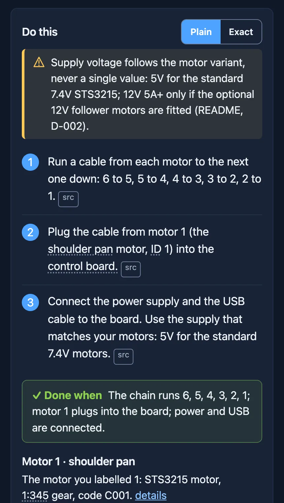
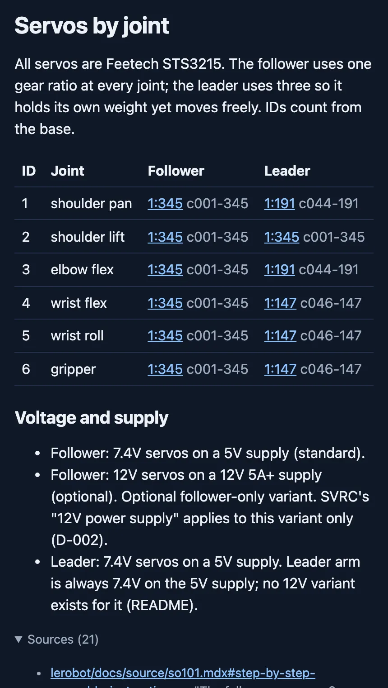
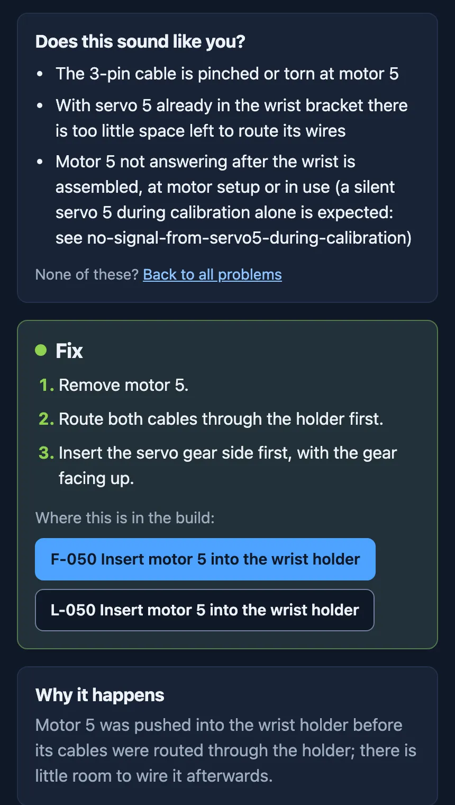
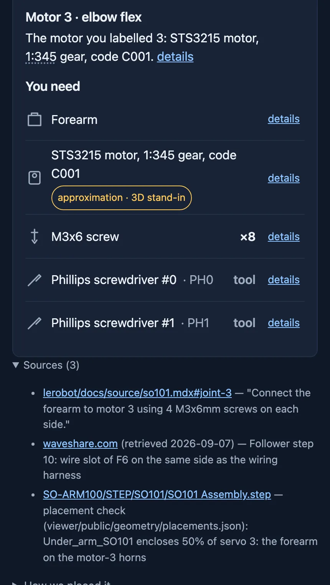

SO-101 Assembly Guide in 3D
Every step of the kitsmith.dev SO-101 guide in 3D: the step's parts highlighted, the arm built so far beneath them, later parts ghosted. Pick a step and drag to turn the model. Each step's page on kitsmith.dev has its check, the screws and tools where it needs them, and the source for every fact.
{{FIRST_META}}
{{FIRST_TITLE}}
{{HELD_BACK}}
On each page of the guide
-

Plain words, a source for each Each step in plain English, the source behind every instruction, and a check that tells you it's done. -

Which motor goes where Motor ID, gear ratio and product code for each of the six joints, both arms. -

Stuck? Start from what you see Troubleshooting pages go from the symptoms to the fix and why it happens. -

Everything the step uses The motor for that joint, and the parts, screws and tools you need for it.
The full guide
{{TOTAL}} steps across the follower and leader arms. Every fact links to its public source.